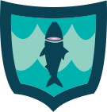

Congratulations you have found the Fish Badge!
What you can do to help
The future of sustainable seafood must include both farm-raised and wild-capture seafood. Today, the United States is recognized as a global leader in sustainable seafood—both wild-caught and farmed.
Not all fish are sustainably caught, which means that not only is harvesting them extremely damaging to the marine environment but you could also be ingesting unscreened plastics and other things that these fish have ingested and absorbed into themselves.
In order to avoid all that nasty business, there are a variety of apps, websites and search engines that can tell you how your fish has been caught, processed, and if it is good for you as well as the environment!